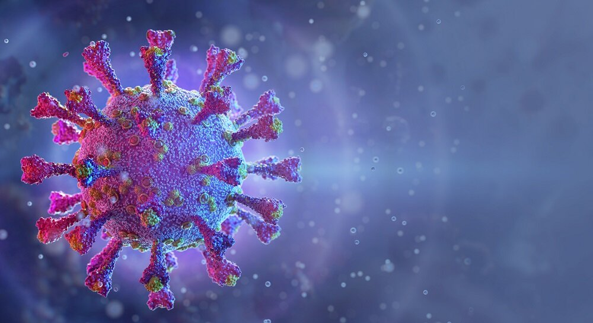
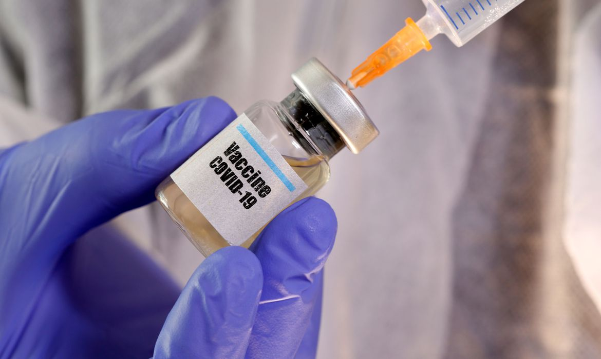

O que é coronavírus
Os coronavírus são uma grande família de vírus comuns em muitas espécies diferentes de animais, incluindo camelos, gado, gatos e morcegos. Raramente, os coronavírus que infectam animais podem infectar pessoas, como exemplo do MERS-CoV e SARS-CoV. Recentemente, em dezembro de 2019, houve a transmissão de um novo coronavírus (SARS-CoV-2), o qual foi identificado em Wuhan na China e causou a COVID-19, sendo em seguida disseminada e transmitida pessoa a pessoa. A COVID-19 é uma doença causada pelo coronavírus, denominado SARS-CoV-2, que apresenta um espectro clínico variando de infecções assintomáticas a quadros graves. De acordo com a Organização Mundial de Saúde, a maioria (cerca de 80%) dos pacientes com COVID-19 podem ser assintomáticos ou oligossintomáticos (poucos sintomas), e aproximadamente 20% dos casos detectados requer atendimento hospitalar por apresentarem dificuldade respiratória, dos quais aproximadamente 5% podem necessitar de suporte ventilatório.
Brasil se aproxima de 240 mil mortes por Covid, com média móvel de 1.092 por dia
País contabilizou 9.865.911 casos e 239.895 óbitos por Covid-19 desde o início da pandemia, segundo balanço do consórcio de veículos de imprensa. Já são 26 dias com a média móvel de mortes acima da marca de 1 mil. O consórcio de veículos de imprensa divulgou novo levantamento da situação da pandemia de coronavírus no Brasil a partir de dados das secretarias estaduais de Saúde, consolidados às 20h desta segunda-feira (15).
O país registrou 601 mortes pela Covid-19 nas últimas 24 horas, chegando ao total de 239.895 óbitos desde o começo da pandemia. Com isso, a média móvel de mortes no Brasil nos últimos 7 dias foi de 1.092. Após o recorde da véspera, essa é a 3ª maior média móvel de óbitos da série histórica; já são 26 dias com essa média acima da marca de 1 mil. A variação foi de +2% em comparação à média de 14 dias atrás, indicando tendência de estabilidade nos óbitos pela doença. Em casos confirmados, desde o começo da pandemia 9.865.911 brasileiros já tiveram ou têm o novo coronavírus, com 32.216 desses confirmados no último dia. A média móvel nos últimos 7 dias foi de 45.087 novos diagnósticos por dia. Isso representa uma variação de -10% em relação aos casos registrados em duas semanas, o que indica tendência de estabilidade nos diagnósticos. Onze estados estão com alta nas mortes: GO, MS, AC, PA, RO, RR, BA, CE, MA, PB e RN.
Brasil, 15 de fevereiro, estatísticas:
-
Total de mortes: 239.895
-
Registro de mortes em 24 horas: 601
-
Média de novas mortes nos últimos 7 dias: 1.092 (variação em 14 dias: +2%)
-
Total de casos confirmados: 9.865.911
-
Registro de casos confirmados em 24 horas: 32.216
-
Média de novos casos nos últimos 7 dias: 45.087 por dia (variação em 14 dias: -10%)
"Você pode ver mais sobre as estatísticas de mortos e contaminados masi detalhadamente na aba cidades ou acessando o link a seguir: detalhes"
VACINA
Divulgada em etapas, a eficácia da vacina da Sinovac contra o coronavírus despertou muitas dúvidas, particularmente a eficácia geral de 50,38% tornada pública na terça-feira (12/01). A partir dos dados da fase 3 dos estudos do Instituto Butantan e com orientação de médicos, a BBC News Brasil destrinchou os dados em um gráfico, para explicar o que cada porcentagem significa na vida de quem se imunizar. Dentro do universo total de participantes do estudo, superior a 12 mil, os resultados preliminares foram obtidos analisando pacientes que haviam tomado duas doses da vacina ou do placebo havia mais de duas semanas.